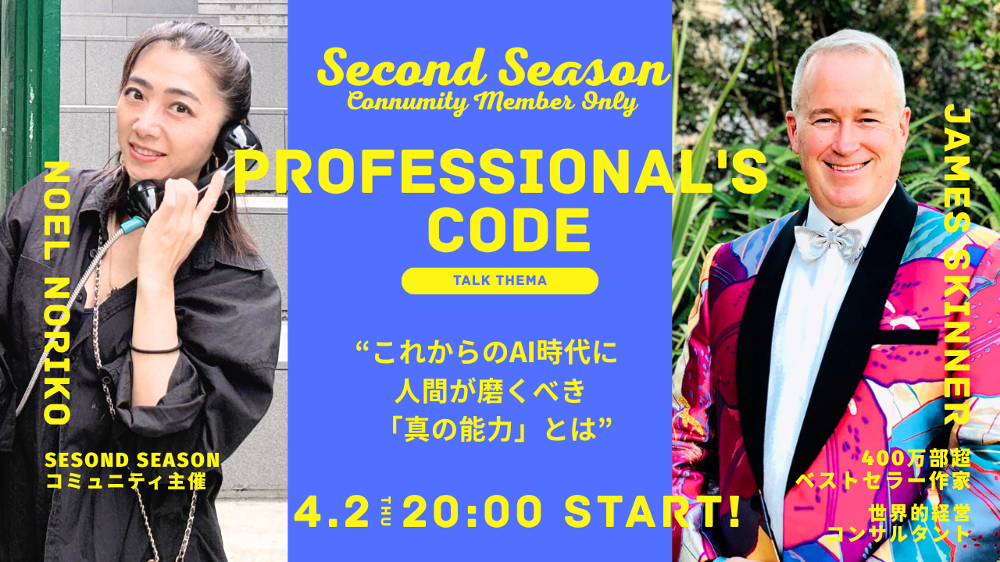
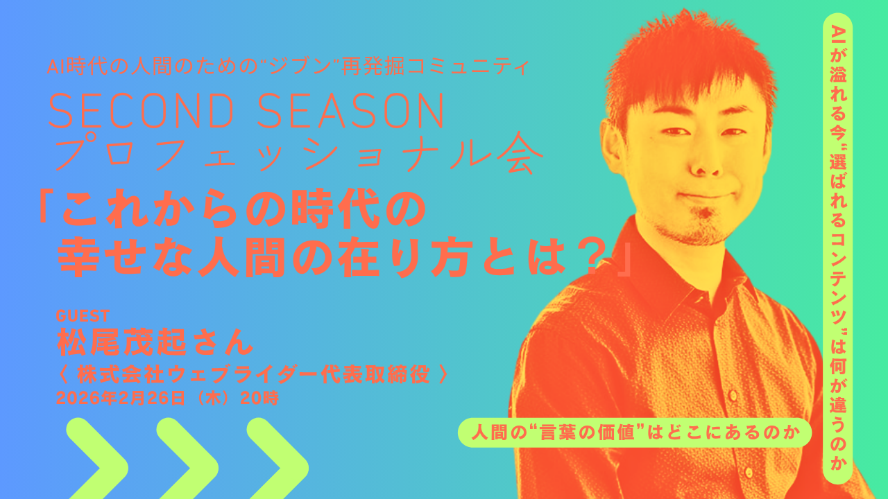

Service Details
オンラインコミュニティ【Second Season】
AI時代の人間のための、ジブン”再”発掘コミュニティーを主宰。
効率化が進む今だからこそ、私たちに一番必要なのは「遊び」です！心から楽しむことで感性をひらき、本来の自分らしさを取り戻す、温かでクリエイティブな場を提供しています。
現在はメンバー限定の安心安全な場で活動しており、公の募集は行っておりません。ご興味がある方はお問合せください。
【活動内容】
毎月Zoomにて「プロフェッショナル会」「問い会」「座談会」を開催しています。

